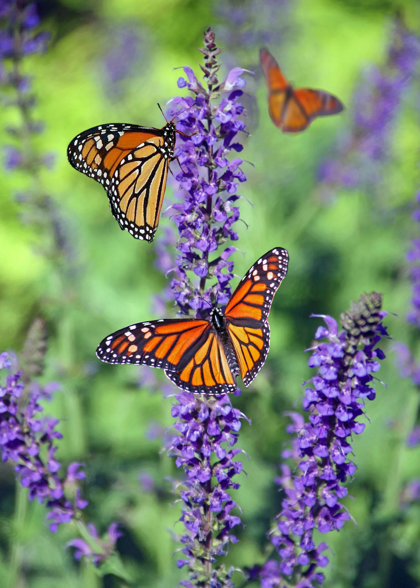
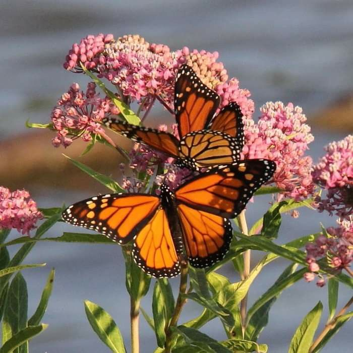

LA MARIPOSA MONARCA

Sobre esta:
Las mariposas monarca (Danaus plexippus) son mundialmente conocidas por la increíble migración masiva que lleva a millones de ejemplares a
California y México cada invierno. La monarca norteamericana es la única mariposa que realiza una travesía tan espectacular, con una distancia
cercana a los 5000 kilómetros. Estos insectos deben partir cada otoño antes de que llegue el frío, que acabaría con ellos si se demoran demasiado.
La monarca es una de las mariposas más reconocibles y mejor estudiadas del planeta. Sus alas naranjas están entrelazadas con líneas negras y bordeadas
con puntos blancos. Aunque la mariposa monarca es nativa de América del Norte y del Sur, se ha extendido a otros lugares cálidos donde crece el algodoncillo,
su único alimento.
Este insecto, además de su gran belleza, se caracteriza por su resistencia y longevidad, pues mientras otras especies de mariposas tienen un ciclo vital de 24 días, la monarca llega a vivir hasta nueve meses, es decir, 12 veces más.
Recorrido de las mariposas monarca
La migración anual de la mariposa monarca oriental es una de las más impresionantes que existen.
Las mariposas monarca utilizan varias rutas migratorias: las que llegan a México vienen de la zona ubicada entre las Rocallosas y los Grandes Lagos, bajan por la
Sierra Madre Oriental, entran al Altiplano por las montañas más bajas y llegan a los estados de México y Michoacán de Ocampo.

La migración de la mariposa monarca comienza ya sea a mediados o a finales del mes de Agosto, llegando a México en los meses de Septiembre
y Octubre pero se asientan en el centro de México a inicios del mes de Noviembre, mientras que el vuelo de regreso a Estados Unidos comienza a
principios de marzo.
Pero esta gran migración está bajo amenaza. El cambio climático, tanto en las áreas de hibernación en México como en las áreas de reproducción
de verano en Estados Unidos, está ocasionando un considerable impacto en la migración de la monarca.
Las dos migraciones
Hay dos migraciones simultáneas, la del este y la del oeste.
La migración del este, incluye a las mariposas que se reproducen al este de las Montañas Rocosas desde el sur de Canadá y gran parte de Estados Unidos.
Estas mariposas viajan al centro de México a los sitios de hibernación en los estados de Michoacán, y Estado de México. Los mismos individuos que llegaron
a México emprenden el viaje de regreso a Estados Unidos al principio de la primavera. Esta migración incluye más del 90% de la población de mariposas Monarca de
Norte América.
La migración del oeste, incluye a las mariposas que se reproducen al oeste de las Montañas Rocosas desde el sur de Canadá y una porción de Estados Unidos.
Estas mariposas viajan a varios sitios de hibernación dispersos a lo largo de la costa de California. Los mismos individuos que llegaron a California emprenden
el viaje de regreso hacia el norte al principio de la primavera. Esta migración incluye menos del 10% de la población de mariposas Monarca de Norte América.
La mariposa monarca en México
La mariposa monarca tiene una gran importancia en la cultura mexicana, desde tiempos antiguos hasta el día de hoy, se pueden encontrar en tallas de piedra y
pinturas de grupos indígenas mexicanos aún antes de la llegada de los españoles. Las mariposas monarca formaban parte de esa cultura y su presencia sigue siendo
fuerte en las celebraciones mexicanas.
-En las celebraciones culturales mexicanas, se pueden ver los brillantes colores naranja, negro y blanco que caracterizan a la mariposa monarca, incluso escuchar
referencias y canciones que hablan de ellas. En algunas danzas, se imitan los movimientos de la mariposa, lo que demuestra la importancia de estos insectos en la
cultura mexicana.
-Las mariposas monarca llegan a México en la misma época en que se celebra el Día de los Muertos, contribuyendo a la trascendencia de su llegada a los bosques
mexicanos cada otoño.
-Hay muchas leyendas y mitos sobre las mariposas monarca y otras mariposas, muchas veces vinculándolas a las almas de los antepasados.
-En algunas historias se cree que son las almas de los seres queridos que regresan, y en otras, se considera que las mariposas son guerreros que han vuelto tras morir
en la batalla. Esto refleja el aprecio de muchos grupos indígenas por la naturaleza y su entorno.
La mariposa es un símbolo de la conexión entre el hombre y la naturaleza, así como de la importancia de honrar a los antepasados. Estos insectos, especialmente las mariposas monarca,
continúan inspirando y siendo relevantes en la cultura mexicana actual.
Los purépechas la consideraban “el alma de los muertos” e interpretaban su llegada como el anuncio de la visita de los difuntos que se producía los días primero
y dos de noviembre.
Con la llegada de la mariposa monarca a sus refugios de invierno, las conecta de manera casi milagrosa con una de las celebraciones más importantes de la cultura mexicana
actual: El Día de Muertos.
De acuerdo con las tradiciones del México contemporáneo, cada año las puertas de “el más allá” se abren a la media noche del 31 de octubre y las almas de los niños
regresan a visitar a sus familias el 1 de noviembre. Después, el 2 de noviembre, las almas adultas llegarán de visita.
Las comunidades indígenas de los alrededores incluyen a la monarca en sus celebraciones del Día de Muertos. Para muchos de ellos, las monarcas son las almas de sus
seres queridos, que regresan del mundo espiritual, justo a tiempo para participar en las celebraciones organizadas.
Las familias dan la bienvenida a sus difuntos preparando un gran evento en su honor. Una reunión entre los fallecidos y los vivos. Esta conexión,
muestra el fuerte impacto que la presencia de la mariposa monarca tiene en la formación de la identidad de un grupo social, sus tradiciones y su cultura.
Tanto en el día de muertos como en la llegada de las monarcas, la tradición es hacer una procesión para guiar a las mariposas y despedirlas. Es por eso que las personas
deben guardar silencio y escuchar el mensaje de los familiares que partieron, el cual se escucha en el aleteo de las monarcas.
El poder inexplicable de las monarcas es un símbolo de fuerza, resiliencia, transformación, preservación y esperanza. Comprender nuestras raíces y la trasformación de nuestras culturas,
es la clave para la conservación de nuestra identidad misma.
Un mensaje acerca de la mariposa monarca en el día de muertos
En peligro de extinción,
¿Qué esta sucediendo con ellas?
Las monarcas se enfrentan a una situación difícil, y su población migratoria ha declinado drásticamente en las últimas dos décadas con algunas recuperaciones leves en
los últimos años o una leve disminución, causando una gran preocupación entre los científicos y expertos en la conservación de
esta especie. Así como la mariposa monarca, se transforma mediante el proceso de metamorfosis, las comunidades alrededor del Santuario de las monarcas en México y a través
de los Estados Unidos y Canadá, están cambiando su estilo de vida para ayudar a preservar a esta especie y sus hábitats naturales.
Están amenazadas por la expansión, el cambio climático global, los pesticidas, el desarrollo de sus campos de hibernación en California, y la explotación
forestal de sus zonas de hibernación en México.
La Secretaría de Medio Ambiente y Recursos Naturales (Semarnat), a través de la Comisión Nacional de Áreas Naturales Protegidas (Conanp), hizo
saber que en el invierno 2023-2024 la mariposa monarca disminuye su presencia dentro de los bosques mexicanos de hibernación. Solo 0.9 hectáreas están
ocupadas por la monarca.
Frente a la situación, se señala que una de las grandes amenazas que enfrentan las mariposas monarcas, a través de su ruta migratoria, tiene que ver con la proliferación
del uso de herbicidas y plaguicidas. Ambos factores disminuyen su hábitat reproductivo y afectan su salud. Igualmente se agrega el impacto del cambio climático.
Las cifras registradas en el monitoreo más reciente señalan que esta es la vez que menos superficie ha sido ocupada por la mariposa monarca, desde 1993.
La mariposa monarca no esta extinta por completo,pero es de alarmarse el como se a reducido la especie, las monarcas se han encontrado en peligro de extinción desde
hace ya unos años, y aunque se han recuperado, cada año es más difícil para las monarcas el sobrevivir.
La extinción de cualquier mariposa puede llevar a graves consecuencias desequilibrando el ecosistema, como la pérdida de especies de plantas.
En este caso la mariposa monarca como polinizadores, su migración a través del continente proporciona un servicio inestimable, esencial para que muchos ecosistemas
prosperen.
Te invitamos a conocer quien fue Homero Gómez González "El Guardián de los Monarcas", el importante activista ambiental y defensor de la mariposa monarca. ¿Quién fue Homero Gómez, el guardián de las Mariposas Monarcas?